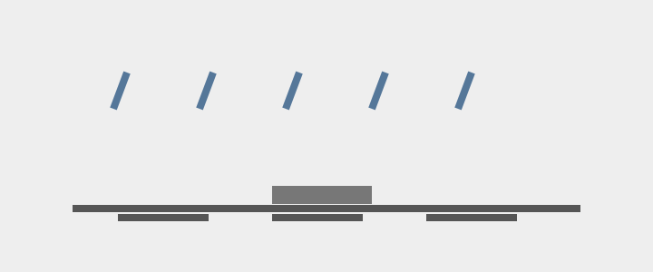

A proposta é consultar uma API meteorológica para atualizar o clima e a aparência do site automaticamente.
Uma cidade mais preparada começa com dados.
Explore 12 bocas de lobo fictícias e simule diferentes níveis de água.
PINHEIROS · CLIMA
Tempo aberto
Dia de sol. Acompanhe os pontos monitorados.
Pontos simulados12
Área demonstrativa
12
Situação normal—
Condição atual
N
Em atenção—
Acompanhar leituras
A
Estado crítico—
Regra demonstrativa
C
Localização Atual
Pinheiros, São Paulo
12 bocas de lobo fictícias
Rio Pinheiros
Praça do Limoeiro
Rua dos Pinheiros
Rua Augusta
Av. Rebouças
PINHEIROS
MAPA FICTÍCIO
Normal
Atenção
CríticoVermelho: raio ilustrativo de 30 m que indica perigo nos arredores.
Como a água pode subir no ponto BL-01?
Escolha um ponto no mapa. Depois, siga os passos para testar uma situação fictícia.
2. Entenda o resultado
Altura da água ao final
Quando chega à altura escolhida?
A conta supõe uma subida constante. É uma simulação, não uma previsão real de alagamento.
Linha contínua: altura estimada. Linha tracejada: referência escolhida. Embaixo: minutos; à esquerda: centímetros.Prefere números? Abra a tabela por minuto
Altura estimada da água ao longo do tempo
Tempo (minutos)
Altura da água (cm)
Problema
O acúmulo de água nas ruas dificulta deslocamentos e afeta moradores de regiões sujeitas a alagamentos.
A proposta explora como medições simuladas podem apresentar mudanças no nível da água de bocas de lobo.

1 de 3 — Chuva na cidade
Tecnologias
HTML organiza o conteúdo, CSS define a apresentação e JavaScript permite interagir com dados fictícios.
Python e JavaScript projetam níveis; o circuito simulado mede, classifica e sinaliza condições locais.